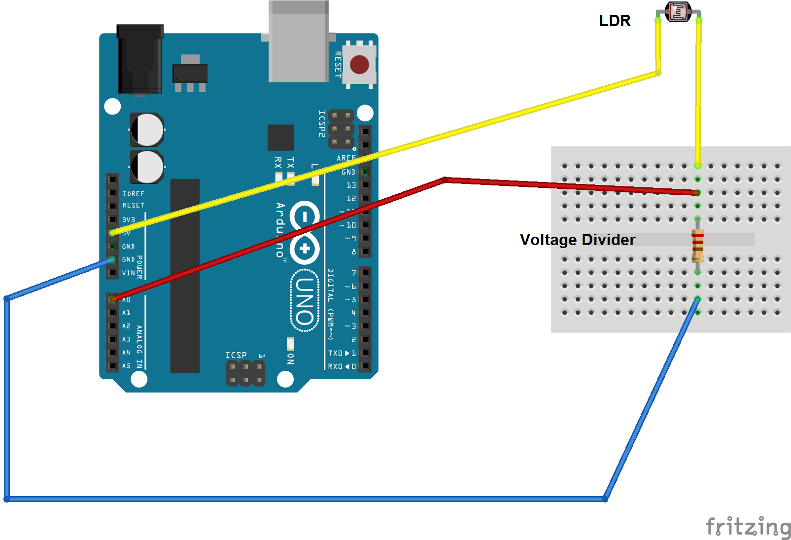
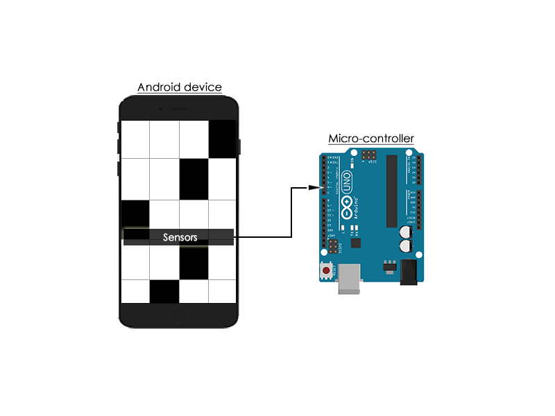
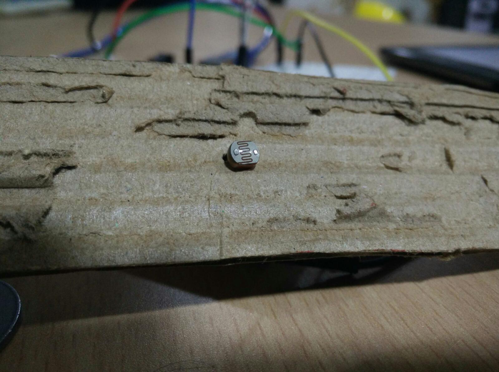

Sensors for automating games
This section lists the various electronic sensors that can be used to detect the differences on the phone screen. The common and main idea for all of these sensors is that it senses the light and convert it into an understandable format. For example, LDR converts the change in light intensity that is falling on top of it into change in resistance.
Light Dependent Resistor(LDR)

An LDR is commonly used for wide range of applications because of it provides decently accurate information of the external lighting and at the same time economical. It is basically a light controlled resistor- which means that the resistance across its terminals changes according to the light incident on it. This can be used in projects where you want to sense the lighting in the surrondings. One of its common applications is to be used to turn on lights automatically in the evening. A video tutorial on how you can build such a circuit is below.
Link: https://youtu.be/_uglvulpofQ
Working
It works on the principle of photo conductivity. When light is incident on top of a LDR, the electrons and holes are seperated- hence the conductivity increases i.e., resistivity decreases. When the light is not incident, they are very few freely moving holes and electrons- so the conductivity is less i.e., the resistivity is high.
Circuit
Assume that LDR is connected at Z1 and Z2 is a resistor. As discussed in the previous chapter, the LDR can be used in a voltage divider circuit to convert this change in resistance because of the external light to change in voltage. We are doing this because the microcontroller can only detect the change in voltage.

This is how the LDR must be connected to the Arduino. This circuit diagram has been created using Fritzing. For more information about Fritzing, visit: http://fritzing.org/

Source code for using LDR with Arduino
This is the code that you can use in Arduino to read the values from the LDR with the appropriate circuit. We will display the values returned by the LDR on the serial monitor so that we can observe the changes in the value returned in real time.
Serial communication is used for data exchange between devices through the serial port. Let's setup it up here between the computer and Arduino.
void setup()
{
// initialize serial communications at 9600 bps:
Serial.begin(9600);
}
Let's connect the LDR input to A0 pin on Arduino.
void loop()
{
// reading the value from sensor and storing it in a variable
sensorValue = analogRead(A0);
// print the output on serial monitor
Serial.print("Sensor Value = ");
Serial.println(sensorValue);
// use a delay to see values clearly
delay(20);
}
Sensor placement on screen
Here's how the LDR can be placed on the top of the screen.

The output voltage from the LDR circuit changes depending on the screen color (either white or black). We have to choose a value in between both of them with we call the threshold to differentiate the colors. This threshold value can be found by watching the values of white and black on the serial monitor.
Once the sensor threshold value is found, we can use the following code to perform tasks accordingly.
void setup()
{
thresholdValue = 500; // obtained from observation of serial monitor
}
void loop()
{
// reading the value from sensor and storing it in a variable
sensorValue = analogRead(A0);
if(sensorValue > thresholdValue)
{
// perform task when screen white
}
else
{
// perform task when screen dark
}
delay(20);
}
Sensor protection from ambient light
This threshold value could change depending on the ambient light in the room. So, we use a cover (or shield) for the LDR to avoid that light to fall on the screen. Shielding is optional but we suggest you to do that. This will make the values that LDR returns consistent irrespective of the external light. We make sure that the color of the shield is dark so that it would block more light.

Examples of application
An LDR can be used to differentiate between bright and dark regions on the screen. If you have a dark region, the LDR has high resistance and vice-versa. This is appropriately reflected in the values sensed by the microcontroller so that appropriate action can be taken.
This is used in the games Piano Tiles and Ready Steady Bang because the primary concept in this games is the identify the difference in intensities of light on screen.
RGB Sensors
Instead of an LDR, we can also use an RGB sensor to differentiate colors on the screen. The additional advantage of the RGB sensor from the LDR is that, it can know the exact color on the screen unlike LDR with which you can find the brightness of the color coming from the screen.
An RGB sensor can clearly differentiate between blue and green, whereas the same would be hard for an LDR to do.